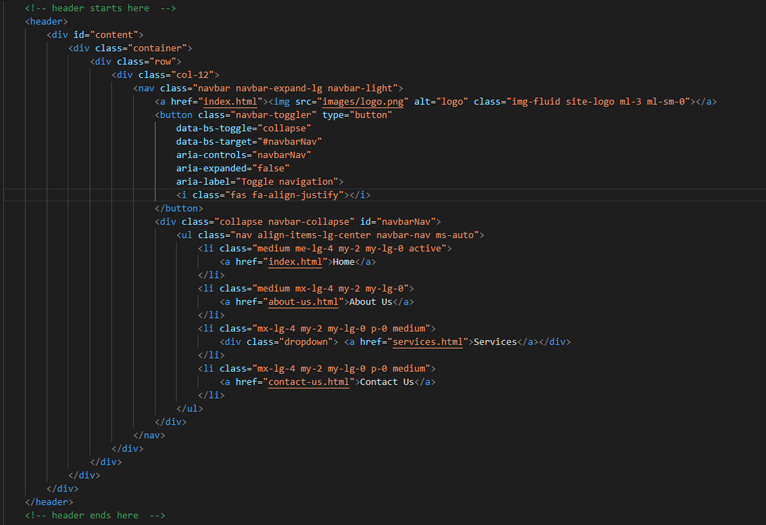
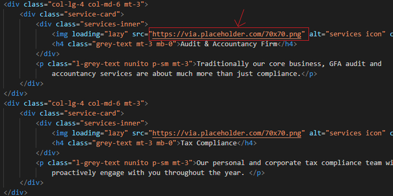

CY Autos is a minimal and clean HTML5 Theme designed for Cars information and services. The theme has a minimal, unique, and attractive homepage with 3 inner pages included for services, about, and contact etc. It is made with latest version of Bootsrap (a CSS Framework). Every page is well designed and fully responsive on all screen sizes.
Thank you for purchasing CY Autos HTML template
Download the theme zip file from the site and extract it using any zip extractor like Winrar etc. The next step is to open your theme folder in any code editor of your choice for example: VScode, Sublime Text, Brackets, Notepad++ etc. Now you can edit any file and replace your content and images. Once template editing is done, save the files and folder and go ahead to upload template files on live server.
The CSS files used in CY Autos template are as follows
css/ -bootstrap.min.css -responsive.css -style.css js/ -all.min.js -bootstrap.bundle.min.js -bootstrap.bundle.min.js.map -custom.js -jquery.min.js root/ -about-us.html -contact-us.html -index.html -makes.html -product-details.html -search-results.html
CY Autos theme template is based on latest Bootstrap 5 Framework. Bootstrap includes a responsive, mobile first fluid grid system that appropriately scales up to 12 columns as the device or viewport size increases.
Here is an example about bootstrap grid. If you need more information about bootstrap grid, please visit this site: http://getbootstrap.com
<div class="row"> <div class="col-lg-12"> Level 1 column <div class="row"> <div class="col-lg-6">Level 2</div> <div class="col-lg-6">Level 2</div> </div> </div> </div>
CY Autos template used valid html5 tags in every section. you can customize/modify/change every section as per your need. here is an example about html section. follow the comments tag bellow to edit html section.
These are the Javascript files that were used in CY Autos template.
Javscript Files Location:It's possible to change the JS settings by extending the defaults from the template, so if you need to extend any feature or add a new feature then just add your jquery or javascript code inside the custom.js file by going to "js/custom.js" file inside CY Autos main theme folder.
Just locate the img tag in the .html files that you need to change/replace and add the image link in the src attribute. As shown below:
Points to be noted:
You can easily change the color by replacing the color hex code in stylesheet. To do so, goto css/style.css and replace the current color hex codes with your desired colors.
Read more about CSS color hex codes here: https://www.w3.org/wiki/CSS/Properties/color/All the images used in the html have been replaced with grey image placeholders and their dimensions are clearly mentioned as well. So just resize your images on those dimensions.
If you face any difficulties in using this theme or have any confusions, feel free to contact the author of this theme on the email address that's been mentioned in the item support. You'll get a response within 24hrs or even less.
The initalization of any plugin or library as well as all the Jquery and Javascript should be written in the custom.js file that located at js/custom.js
The images and icons used in this template have been taken from:
Once again, thank you so much for purchasing CY Autos template. If you need any help using the file or need special customizing please feel free to contact us via our author profile. Thank you.